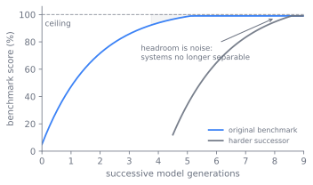
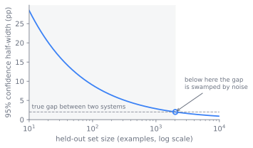

基准及其困境
评估是用来验证某个阶段是否真的有效的唯一办法，横贯整条链从数据、架构到前训练和后训练。这一章讲的是评估里最古老、也最受争议的工具：静态基准。贯穿全章的是一个尴尬的事实：一个公开的基准分数，从来不是关于模型本身的陈述，而是关于模型加上它的测量装置这个整体的陈述。评估工作的核心，就是让这个陈述经得起细看。怎样理解留出集、基准家族为什么会饱和、污染如何无声地虚高数字、什么时候一个分数才算真的证据而不只是道听途说，这些都在这一章。
一个错误数字的解剖
流水线每跑一个阶段就产出新的权重。判断它是否有效的诚实办法，是拿一个独立的、经得住推敲的数字来验证。这正是基准该做的事。可问题常常不在没数字，而在信了错数字。分数可能被泄露的训练数据污染了；可能被针对某种格式的调优而冲高了；或者根本只是噪声伪装的信号。每一种都能吐出漂亮的数字，却一到别的地方就不再适用。最危险的是这都是无声的，因为数字本身不会说「我错了」。
没有单一的一层能拦住这三种问题。实用的办法是把自动基准、生产监控、A/B 测试、用户反馈和人工研究堆起来。像瑞士奶酪一样，每一层都堵住其他层漏掉的东西。这一章讲的是最底层：静态基准。它最便宜、最可重复、最容易跨实验室对比。也是最容易无声说谎的一种。
图 27.1 演示为什么单层不够。三种问题各自钻过对它失明的那一层，只有整个堆栈才能全都挡住。
flowchart LR C["污染"] G["格式操弄"] N["噪声"] L1["静态基准"] L2["生产监控"] L3["A/B 测试"] L4["用户反馈"] L5["人工研究"] OK["可信信号"] C --> L1 G --> L1 N --> L1 L1 -->|"泄漏溜过"| L2 L1 -->|"被操弄的格式溜过"| L4 L1 -->|"噪声溜过"| L3 L2 --> OK L3 --> L5 L4 --> L5 L5 --> OK
污染、作假、噪声这三种问题贯穿全章。接下来各节从基准测什么开始拆解，展开每一种失败怎么钻进来，最后落到一套规范上。这套规范确保数字即便在危险中也说实话。
基准究竟在测什么
能力幅员太广，一个测试测不全。所以基准分成几个家族，各自沿一个维度推进，也各有各的失效方式。
- 知识。 事实和学术回忆，比如 MMLU (Hendrycks et al. 2020)。容易饱和、容易污染，前沿模型已经逼到天花板。
- 推理。 多步的推断，不只是回忆。不那么容易被污染，但也难给个客观的分数。所以这方向越来越多转向研究生级别、搜不到的题目，比如 GPQA (Rein et al. 2023)。
- 数学。 小学到竞赛级，GSM8K (Cobbe et al. 2021) 到 MATH (Hendrycks et al. 2021)。答案可以自动验证。这个性质恰好是 第 14 章 讲的可验证奖励强化学习的桥梁。
- 代码。 函数补全、仓库级修复，HumanEval (Chen et al. 2021) 到 SWE-bench (Jimenez et al. 2023) 这一类。代码能跑，所以裁判是测试框架而不是模型。
- 多语言。 同一个任务用多种语言。揭露了 第 4 章 里分词器和数据配比的选择，这些只用英文的时候看不出来。
- 长上下文。 长输入上的检索和推理，从找针到 RULER (Hsieh et al. 2024) 这样的硬题。这决定了 第 20 章 讨论的长上下文能否真正延伸。
- 智能体。 工具调用、多步任务、网页或系统交互，GAIA (Mialon et al. 2023)、WebArena (Zhou et al. 2023)、τ-bench (Yao et al. 2024) 这些基准测的内容。无法缩到单个静态答案，第 29 章 会专门拆开评估的方法。
各个家族都有各自的失效模式。但它们都建在同一个前提上。决定一个数字有没有意义的，是这个前提，不是家族的分类。
留出契约
那个前提就是：一个测试集，模型在训练时从未见过它的答案。「留出」不是某个文件的性质，是整条流水线的性质。集合必须不出现在任何训练混合中，才能叫留出。这是数据层的契约，不是评估层自己能勾上的复选框。
污染就是对这个契约的破坏。这是三种问题中最严重的一种，因为它无声、而且总是往好数字的方向去。既然不会自己跳出来，就得主动找。检测靠的是重叠检测和成员推断。精确和近似重复匹配，通常用 n-gram 对着训练语料，能抓逐字泄露和轻微改写的泄露。金丝雀字符串是藏在留出集里的独特标记。模型要是能复现它，说明那个集合被吸收了。成员推断信号更进一步，问某个样本有没被训练过。比如 Min-K% Prob，一个样本里最低概率的词元在模型中概率异常高，就标出来 (Shi et al. 2023)。这些手段单独都不是定论，所以污染要报告成「契约和审计」，而不是单一测试。
图 27.2 展示留出契约的全过程。基准到达权重有两条路，审计它有没到达有三种检测信号。第二条路由在基准上训练过的教师模型完全绕过语料。这一侧留到最后再说。
为什么基准会衰退
留出集必须既留出又有难度，才算有用。基准的历史就是一部饱和的历史，第二个性质在被磨掉。基准只能在模型还会失败的地方分开各系统。一旦一个家族聚集到天花板附近，剩下的就只是噪声。这是本章第三种问题，这时基准就分不开系统了。
知识基准先掉了坑。MMLU 当年是有分辨度的 (Hendrycks et al. 2020)。如今前沿模型已经逼到天花板。所以这方向转向故意出难题、抗污染的版本。GPQA 就是这样，题目难到连领域外的专家有网也答不了，这样回忆和检索就代替不了推理 (Rein et al. 2023)。
图 27.3 画出了这个过程。一代代模型沿着同一个基准往天花板爬。系统间的差距坍成噪声。所以要引入更难的新基准来恢复分辨力。但新基准也迟早会掉进同样的陷阱。

饱和把设计推向两个方向，选择哪一边是静态评估的核心权衡。一边是更难的静态集。这赢得了时间，但继承了同样的命运。任何固定集都是靶子。最终会被击中，无论是真实能力还是污染。另一边是活体评估，根本不要固定靶子。Chatbot Arena 用不断更新的人类偏好对比代替冻结的测试集。这样没有答案钥匙可泄露，测量也随着模型总体变化 (Chiang et al. 2024)。路线从固定学术考试，进到防搜索考试，再进到没答案钥匙可背的动态评估。
两个权衡的选择决定了一个公开数字的价值。读者需要清楚这个数字在每个权衡的哪一侧。
- 静态与动态。 静态基准便宜、可重复、易对比、可以跨时间看。这是排行榜用它的原因。但会饱和、污染、漏掉没有单个答案的东西。动态评估轮换集合和活环境。没有固定靶子就能抗作假。但成本高、难对比，因为测试本身在动。
- 公开与私有留出。 公开基准应该假定会污染。答案钥匙在网上，下一轮训练默认会吸进去。私有留出集可信，但前提是完整性保住。完整性是贬值的资产。每次泄露、每次意外纳入、每个公布的样本都在侵蚀它。诚实的做法是：私有集泄漏前信它，公开集早就假定污染。
是模型，还是框架
污染和饱和打击的是测试本身。第三种问题打击的是测量这件事。核心的论断在这里最尖锐：即便基准干净、不饱和，也得被一个框架包裹才能产生数字。而这个框架会改变这个数字。
图 27.4 展开这个问题。同一组权重可以产生不同的分数，甚至改变排名。完全取决于模型和分数之间的框架旋钮。
flowchart LR
W["固定权重"]
subgraph H["框架旋钮"]
direction TB
P["提示模板"]
F["少样本数量"]
A["答案解析"]
D["解码设置"]
end
W --> H
H --> S1["框架 A 下的分数"]
H --> S2["框架 B 下的分数"]
S1 --> R["排名可能翻转"]
S2 --> R保持数字诚实
三种问题各有应对的规范。而「留出集完整性」操作化这个规范，这就是纪律从原则变成流程的地方。集合必须满足这些才配得上「留出」。永不纳入任何训练混合。版本固定到指向确切的集合。访问受控以防泄露。检测到泄露就轮换。规模大到产生信号而不只是飘忽的数字。这是评估层的资产。既回应污染也回应噪声。因为太小的集合本身就是虚假信号的源头。
图 27.5 展开了规模要求。准确率的置信区间只随留出集大小的平方根而缩小。小集合的误差棒宽到淹没两个系统的差距。这就是噪声假扮信号的样子。

改改 p1 和 p2，试试你想分开的两个准确率，看要多少留出样本误差棒才能塞进差距里。
import numpy as np
import matplotlib.pyplot as plt
p1, p2 = 0.70, 0.72 # two systems' true accuracies
gap = abs(p2 - p1)
N = np.arange(100, 30001, 100)
p = (p1 + p2) / 2 # pooled accuracy for the standard error
half = 1.96 * np.sqrt(p * (1 - p) / N) # 95% CI half-width
crossover = N[np.argmax(half < gap)] # first N where the error bar fits in the gap
print(f"gap between systems: {gap:.3f}")
print(f"held-out size where 95% error bar < gap: {crossover} examples")
plt.plot(N, half, label="95% CI half-width")
plt.axhline(gap, color="r", ls="--", label=f"true gap = {gap:.2f}")
plt.xlabel("held-out set size N"); plt.ylabel("accuracy +/- half-width")
plt.legend(); plt.title("Below the crossover, noise swamps the signal")
plt.show()
但评估层不负责清洗语料。构建期清除测试数据、去重、去重叠，这是数据流水线的工作。评估层提供留出集和金丝雀。消费数据层的去污契约。审计这个契约有没有被遵守。「审计」是关键词。评估层的职责是事后验证它定义的「留出」有没有混进任何训练混合。一旦混进去就要大声说出来。
还有一条更隐蔽的污染路径。它完全绕过语料。就是 图 27.2 那条间接路。教师模型本身在某个基准上训练过。它生成的合成数据就把基准的内容带进了学生。学生从没直接见过基准。这就是为什么 第 12 章 的合成数据和这里的留出契约耦合在一起。教师脏了，干净的语料也没用。
这就是为什么孤立的基准数字不带上下文就是传闻，不是测量。污染感知报告是起码的规范。说清这个数字是在哪个版本的去污契约下产生的。在数字旁边披露所有已知的泄露。这样读者才能在使用前分清真实结果和污染结果。
延伸阅读
- Hendrycks et al., "Measuring Massive Multitask Language Understanding" (MMLU), 2020. arXiv:2009.03300
- Liang et al., "Holistic Evaluation of Language Models" (HELM), 2022. arXiv:2211.09110
- Chen et al., "Evaluating Large Language Models Trained on Code" (HumanEval), 2021. arXiv:2107.03374
- Cobbe et al., "Training Verifiers to Solve Math Word Problems" (GSM8K), 2021. arXiv:2110.14168
- Hendrycks et al., "Measuring Mathematical Problem Solving with the MATH Dataset," 2021. arXiv:2103.03874
- Rein et al., "GPQA: A Graduate-Level Google-Proof Q&A Benchmark," 2023. arXiv:2311.12022
- Jimenez et al., "SWE-bench: Can Language Models Resolve Real-World GitHub Issues?," 2023 (ICLR 2024). arXiv:2310.06770
- Hsieh et al., "RULER: What's the Real Context Size of Your Long-Context Language Models?," 2024 (COLM 2024). arXiv:2404.06654
- Mialon et al., "GAIA: a benchmark for General AI Assistants," 2023 (ICLR 2024). arXiv:2311.12983
- Yao et al., "τ-bench: A Benchmark for Tool-Agent-User Interaction in Real-World Domains," 2024. arXiv:2406.12045
- Zhou et al., "WebArena: A Realistic Web Environment for Building Autonomous Agents," 2023 (ICLR 2024). arXiv:2307.13854
- Chiang et al., "Chatbot Arena: An Open Platform for Evaluating LLMs by Human Preference," 2024 (ICML 2024). arXiv:2403.04132
- Shi et al., "Detecting Pretraining Data from Large Language Models," 2023 (ICLR 2024). arXiv:2310.16789
- Xie et al., "OSWorld: Benchmarking Multimodal Agents for Open-Ended Tasks in Real Computer Environments," 2024 (NeurIPS 2024). arXiv:2404.07972
- OpenAI, "BrowseComp: A Simple Yet Challenging Benchmark for Browsing Agents," 2025. arXiv:2504.12516